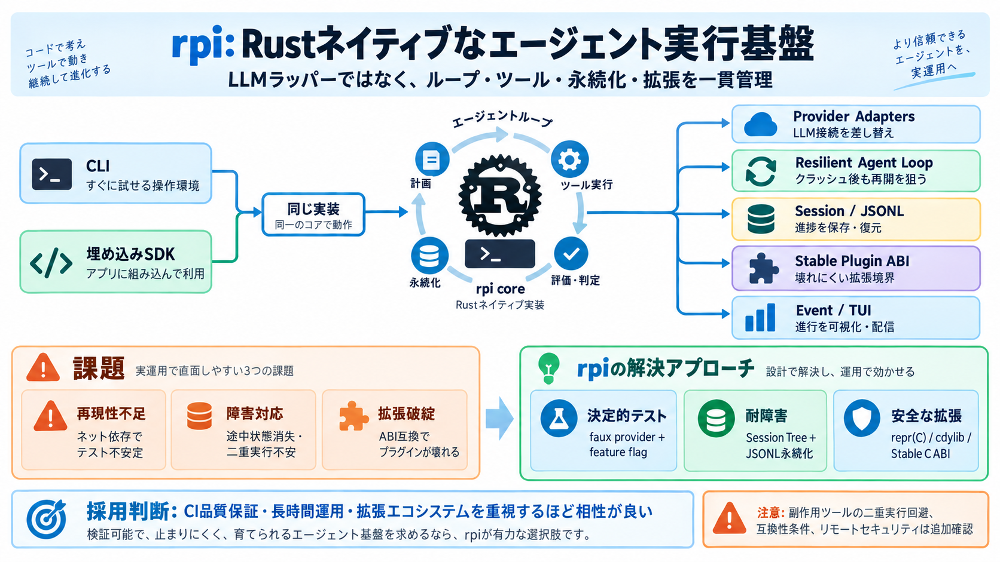

Pi Agent - Obsidian Plugin
At plugin startup, Pi discovers project/global extensions, prompt templates, and skills through RPC and applies its own …

Agent / エージェント：LLMがツールを使って目標達成する仕組み
Plugin ABI / プラグインABI：ホストと拡張が壊れにくい境界仕様
ネットワーク依存でテストが不安定
途中状態を失い、二重実行の不安
ABI互換が崩れてプラグインが壊れる
組み込みSDKとrpiコマンドで同じ実装
9つのクレート（providerアダプタ等）で機能を分解・再組立て
LLM接続を差し替え可能
耐障害な実行ループ
安全な拡張境界
ストリーミングや進行の扱い
永続化と再開（JSONL）
決定的なプロバイダ経路で品質保証
テストが意図せずネット経路を踏まない設計
セッションをツリーで管理
フレーム単位の進捗保存で“再開”を狙う
表現の互換性を確保
プラグインを外部バイナリとして扱う
安定なC互換インタフェース
ツール/プロバイダ設計を一貫運用
実装差分の原因を減らす
バイナリサイズ / 起動時間 / RSSなど
LLMレイテンシ、長時間、TUI描画コスト
いいえ。ループ、ツール実行、セッション永続化、TUI、ABIまで含む実行ランタイム。
faux provider等で決定的経路をテストに組み込み、ネット依存を踏まない。
二重実行を避ける趣旨はあるが、副作用ツールまでの厳密性は追加確認が必要。
クライアントはプロバイダ/ツール/拡張/セッションファイルを持たず、サーバ側で実行。
CLI/埋め込み共通＋オフライン再現性でCI/運用に直結
再開やABI境界は示唆あり。副作用ツールの扱いは本文断片だけでは不明
“ループを所有”する立場で、自社要件に合わせやすい
セッション仕様、再実行ルール、プラグインABIの互換性条件、リモートのセキュリティ要件
長時間運用・CI品質保証・拡張エコシステムを重視するほど相性が良い
At plugin startup, Pi discovers project/global extensions, prompt templates, and skills through RPC and applies its own …
context-mode sandboxes tool output for a claimed 98% context reduction and adds persistent SQLite memory. rpiv-ask-user…
MIDI Agent is an AI MIDI VST plugin that transforms how producers approach music production across any genre and DAW. In…
> Ever feel stuck on a melody or rhythm? MIDI Agent is an AI-powered plugin that works right inside your DAW, giving you…
Today I’m open sourcing it. It’s been my private toolkit for a while, but it’s reached a point where I use it every day …